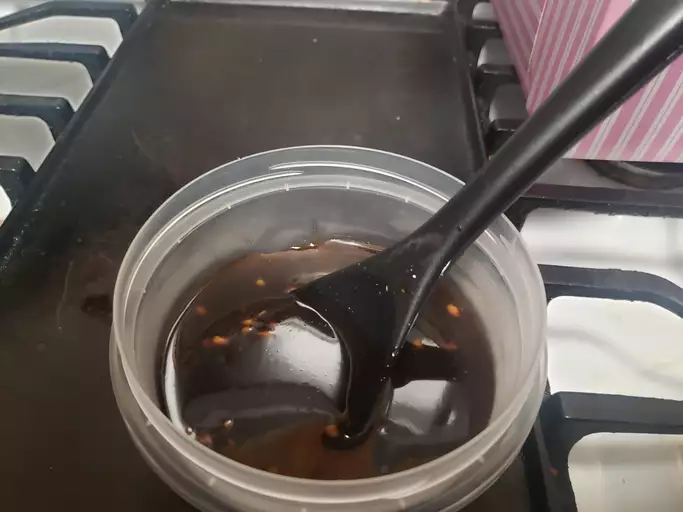

Simple Teriyaki Sauce

A simple sauce for various dishes.
Teriyaki sauce is widely used in a different array of dishes: pork, chicken, and fish. Not only that, but it can also be used as a dip for dumplings or shrimp.
Teriyaki is a thick, sweet, and savory sauce used as marinade, basting agent, or dipping sauce. If you're looking to make some Teriyaki Chicken, then teriyaki sauce is the number one sauce you must have.
Ingredients
- 1 cup of water
- 1/4 cup soy sauce
- 5 tsp packed brown sugar
- 1 tbsp honey, or more to taste
- 1/2 tsp ground ginger
- 1/4 tsp garlic powder
- 2 tbsp cornstarch
- 1/4 cup cold water
Steps:
- Gather all ingredients.
- Combine 1 cup of water, soy sauce, brown sugar, honey, ginger, and garlic powder in a saucepan over medium heat. Cook until nearly heated through, about 1 minute.
- Mix cornstarch and 1/4 cold water together in a cup; stir until dissolved. Add to the saucepan.
- Cook and stir sauce until thickened, 5 to 7 minutes.
- Store or enjoy, you pick.